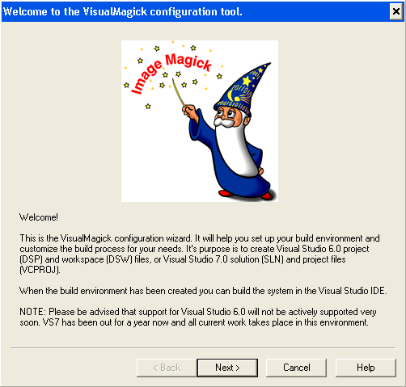

Install from Unix Source • Install from Windows Source
Chances are, ImageMagick is already installed on your computer if you are using some flavor of Unix, and its likely not installed if you are using some form of Windows. In either case, you can type the following to find out:
identify -version
If the identify program executes and identifies itself as ImageMagick, you may not need to install ImageMagick from source unless you want to add support for additional image formats or upgrade to a newer version. You also have the option of installing a pre-compiled binary release. However, if you still want to install from source, choose a platform, Unix or Windows. Before installing from source, you may want to review recent changes to the ImageMagick distribution.
The authoritative source code repository is https://github.com/ImageMagick. We maintain a source code mirror at https://git.imagemagick.org/repos/ImageMagick. We test and deploy ImageMagick with Travis CI and AppVeyor.
Install from Unix Source
ImageMagick builds on a variety of Unix and Unix-like operating systems including Linux, Solaris, FreeBSD, Mac OS X, and others. A compiler is required and fortunately almost all modern Unix systems have one. Download ImageMagick.tar.gz from imagemagick.org or a mirror and verify its message digest.
Unpack the distribution with this command:
tar xvzf ImageMagick.tar.gz
Next configure and compile ImageMagick. Note the pkg-config script is required so that ImageMagick can find certain optional delegate libraries on your system. To configure, type:
$ cd ImageMagick-7.0.8
$ ./configure
$ make
If ImageMagick configured and compiled without complaint, you are ready to install it on your system. Administrator privileges are required to install. To install, type
sudo make install
You may need to configure the dynamic linker run-time bindings:
sudo ldconfig /usr/local/lib
Finally, verify the ImageMagick install worked properly, type
/usr/local/bin/convert logo: logo.gif
For a more comprehensive test, run the ImageMagick validation suite. Ghostscript and Freetype are prerequisites, otherwise expect the EPS, PS, PDF and text annotations tests to fail.
make check
Congratulations, you have a working ImageMagick distribution and you are ready to use ImageMagick to convert, compose, or edit your images or perhaps you'll want to use one of the Application Program Interfaces for C, C++, Perl, and others.
The above instructions will satisfy a great number of ImageMagick users, but we suspect a few will have additional questions or problems to consider. For example, what does one do if ImageMagick fails to configure or compile? Or what if you don't have administrator privileges and what if you don't want to install ImageMagick in the default /../usr/local folder? You will find the answer to these questions, and more, in Advanced Unix Source Installation.
Install from Windows Source
Building ImageMagick source for Windows requires a modern version of Microsoft Visual Studio IDE. Users have reported success with the Borland C++ compiler as well. If you don't have a compiler you can still install a self-installing binary release.
Clone the Github repo:
git clone git@github.com:ImageMagick/ImageMagick-Windows.git ImageMagick-Windows-7and run CloneRepositories.cmd. Alternatively, download ImageMagick-windows.zip and verify its message digest. For the latter, you can unpack the distribution with WinZip or type the following from any MS-DOS Command Prompt window:
unzip ImageMagick-windows.zipNext, launch your Visual Studio IDE and choose Open->Project. Select the configure workspace from the ImageMagick-7.0.8/VisualMagick/configure folder and press Open. Choose Build->Build Solution to compile the program and on completion run the program.

Press Next and click on the multi-threaded static build. If you are using the Visual Studio 6.0 IDE, make sure no check is next to the Generate Visual Studio 7 format option. Now press, on Next twice and finally Finish. The configuration utility just created a workspace required to build ImageMagick from source. Choose Open->Project and select the VisualStaticMT workspace from the ImageMagick-7.0.8/VisualMagick/ folder. Finally, choose Build->Build Solution to compile and build the ImageMagick distribution.
To verify ImageMagick is working properly, launch a MS-DOS Command Prompt window and type
$ cd ImageMagick-7.0.8
$ convert logo: image.jpg
For a more comprehensive test, run the ImageMagick validation suite:
validate
Congratulations, you have a working ImageMagick distribution under Windows and you are ready to use ImageMagick to convert, compose, or edit your images or perhaps you'll want to use one of the Application Program Interfaces for C, C++, Perl, and others.
The above instructions will satisfy a great number of ImageMagick users, but we suspect a few will have additional questions or problems to consider. For example, what does one do if ImageMagick fails to configure or compile? Or what if you want to install ImageMagick in a place other than the ImageMagick-7.0.8/VisualMagick/bin folder? Or perhaps you want to build and install the ImageMagickObject COM+ component. You will find the answer to these questions, and more, in Advanced Windows Source Installation.